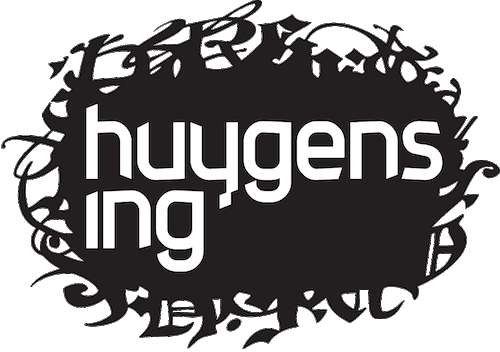
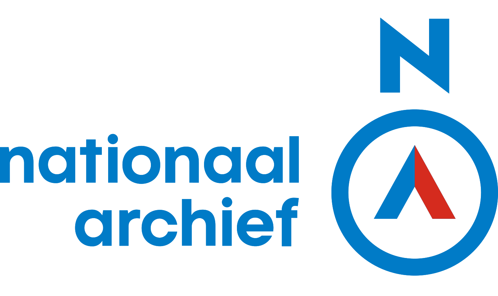

language en
Person Name Vocabulary
Version 1.1, release date: 2019-07-01
- Authors:
- Lodewijk Petram, Huygens Institute for the History of the Netherlands
- Elvin Dechesne, Ordina, The Netherlands
- Gijsbert Kruithof, National Archives, The Netherlands
- Contributors:
- Jeroen Balkenende, Central Bureau of Genealogy, The Netherlands
- Gerrit Bloothooft, Utrecht University, The Netherlands
- Bob Coret, Coret Genealogie
- Sebastiaan Derks, Huygens Institute for the History of the Netherlands
- Menno den Engelse, Hic Sunt Leones
- Ed de Heer, National Archives, The Netherlands
- Gerard Kuys, Ordina, The Netherlands
- Harm Nijboer, Huygens Institute for the History of the Netherlands
- Vincent Sleebe, National Archives, The Netherlands
- Leon van Wissen, University of Amsterdam, The Netherlands
- Publisher:
- Lodewijk Petram, Huygens Institute for the History of the Netherlands
- Involved institutions:


- Machine-readable formats:
- Turtle syntax, OWL/XML syntax, JSON-LD, RDF/XML, N-Triples
- Imported Ontologies:
- foaf
- schema
- cidoc-crm
- wikidata-wd
- wikidata-wdt
- DBpedia
- License:

Person Name Vocabulary Specification
Acknowledgements back to ToC
The authors would like to thank Silvio Peroni for developing LODE, a Live OWL Documentation Environment, which is used for representing the Cross Referencing Section of this document, and Daniel Garijo for developing Widoco, the program used to create the template used in this documentation.